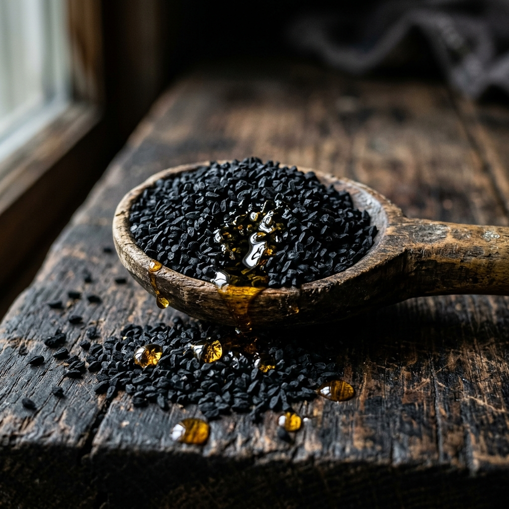

Wissen aus Anatolien
Tauchen Sie ein in unsere Sammlung an tiefgreifenden Artikeln über traditionelle Herstellungsmethoden, Pflanzenheilkunde und die Geheimnisse echter Kaltpressung.

Schwarzkümmelöl & Thymoquinon: Das Gold der Pharaonen
Eine tiefgreifende wissenschaftliche und historische Analyse von Schwarzkümmelöl (Nigella sativa), seinem Hauptwirkstoff Thymoquinon und seinen unzähligen gesundheitlichen Vorteilen.

Traditionelles Tahin: Die Kunst der Steinmühle
Erfahren Sie, warum die traditionelle Steinvermahlung von geröstetem Sesam der einzige Weg ist, um das seidige, aromatische und hochnährwertige Tahin zu produzieren.

Das alte Geheimnis der Berge: Zypressenzapfen Paste
Entdecken Sie die historische Bedeutung und die atmungsunterstützenden Eigenschaften der traditionellen anatolischen Zypressenzapfen Paste.

Die Wahrheit über Kaltpressung: Temperatur macht den Unterschied
Erfahren Sie, warum die echte, temperaturkontrollierte Kaltpressung entscheidend für die Qualität, den Geschmack und die Heilwirkung von Pflanzenölen ist.

Anatolische Traubenmelasse (Pekmez): Natürliche Energie
Erfahren Sie, wie aus sonnengereiften anatolischen Trauben durch stundenlanges Einkochen die mineralstoffreiche Melasse 'Pekmez' entsteht.